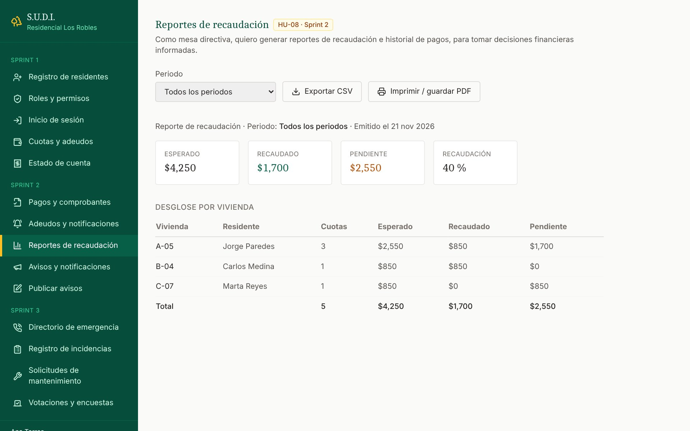
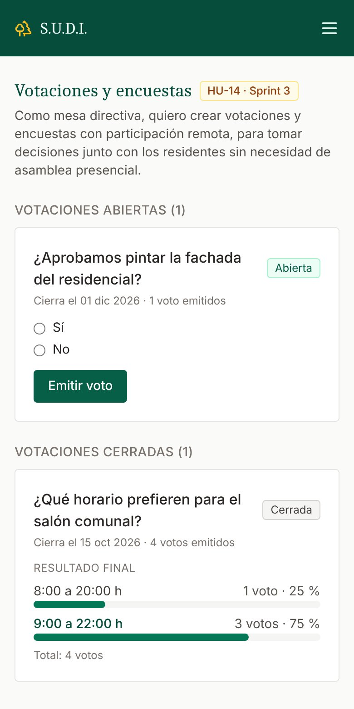

S.U.D.I.
Sistema Único de Información del Residencial Los Robles
Plataforma web para administrar el residencial: residentes, cuotas, pagos, avisos, emergencias, incidencias, mantenimiento y votaciones. Se construyó con React en tres Sprints de Scrum durante el curso Proyecto 2.
- Alumno
- Juan Antonio Fuentes Herrera
- Asesor
- José Martín Valencia
- Materia
- Proyecto 2, UDG Virtual
- Entrega
- Noviembre de 2026


Actividades del curso
Las Unidades 1 y 2 prepararon el proyecto con el Product Backlog y el Sprint Schedule; en las Unidades 3 y 4 se desarrollaron los Sprints y los ajustes finales. Cada entrega abre en PDF.
Unidad 1El primer sprint con Scrum
Unidad 2Propuesta de sprint backlog
Unidad 3Sprint: desarrollo, revisión y ajuste
- PreliminarRetomando mi primer sprintForoParticipación en foro
- 3.1Primera fase de desarrollo, revisión y ajuste de los SprintsBuzónVer PDF
- 3.2Segunda fase de desarrollo, revisión y ajuste de los Sprints y el backlogBuzónVer PDF
- 3.3Tercera fase de desarrollo, revisión y ajuste de los Sprints y el backlogBuzónVer PDF
- IntegradoraProducto final de la Unidad 3BuzónVer PDF
Sistema implementado
Las 14 historias del Product Backlog funcionan en el navegador, en computadora y en celular. Entra con cualquiera de las cuentas de prueba; cada rol ve solo las secciones que le corresponden.
Contraseña de todas las cuentas: 1234. Los datos son de demostración y vuelven a su estado inicial al recargar la página.
- Sprint 1Registro de residentes, roles y permisos, inicio de sesión, cuotas y estado de cuenta
- Sprint 2Pagos con comprobante, adeudos y notificaciones, reportes de recaudación y avisos
- Sprint 3Directorio de emergencia, incidencias, mantenimiento y votaciones
| Rol | Correo | Puede |
|---|---|---|
| Presidente | ana.torres@losrobles.mx | Asignar roles, registrar cuotas, validar pagos y todo lo de la mesa directiva |
| Tesorería | carlos.medina@losrobles.mx | Registrar cuotas, validar pagos, avisar adeudos y todo lo de la mesa directiva |
| Secretaría | marta.reyes@losrobles.mx | Reportes, avisos, incidencias, mantenimiento, directorio y votaciones |
| Residente | jorge.paredes@losrobles.mx | Pagar y consultar su estado de cuenta, reportar incidencias, pedir mantenimiento y votar |
Código fuente
El código de los tres Sprints y de los ajustes de la Unidad 4 está en GitHub. El archivo comprimido contiene el proyecto completo, sin las dependencias, que se instalan con npm.
Para ejecutarlo en tu computadora necesitas Node.js 18 o superior.
npm install
npm run devsrc/App.jsxUn componente por historia de usuario, la matriz de permisos y el estado de la aplicaciónsrc/main.jsxPunto de entrada de Reactsrc/index.cssEstilos base con Tailwind CSSREADME.mdEstado por Sprint, ajustes, permisos, cuentas de prueba y equipomenu/Este menú, con las actividades del curso y el reporte
Reporte de modificaciones
Cada revisión dejó cambios en el sistema, el backlog o el Sprint Schedule. El reporte reúne qué se cambió, de dónde salió la propuesta y en qué quedó.
- 10Revisión del Sprint 1Permisos por rol, validaciones y ajustes al backlog
- 8Sprint 2Fecha límite de pago, validación de comprobantes y reportes
- 5Sprint 3Notificaciones, votaciones e historial de incidencias
- 2Unidad 4 y cierreVersión para celular y publicación del sistema